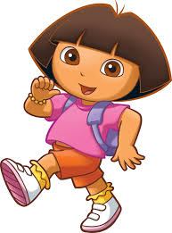
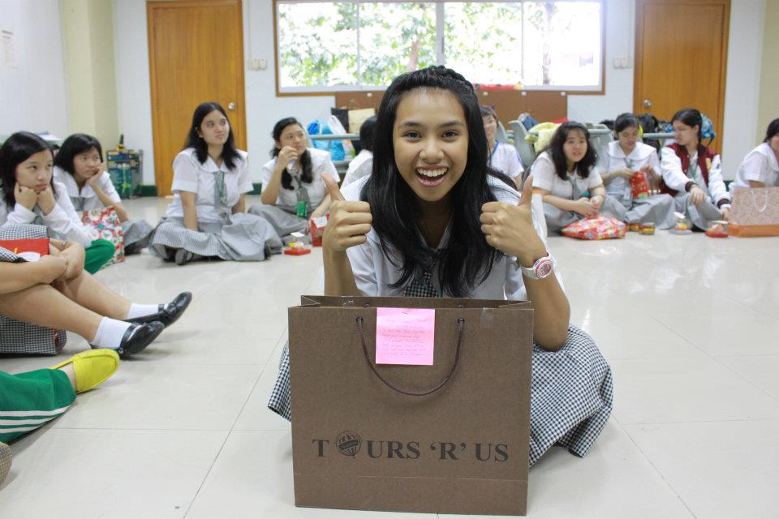
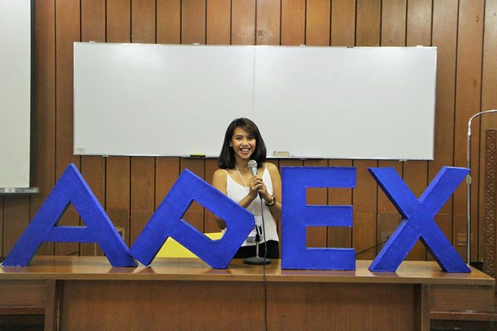
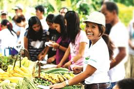

When I was a child, I was the princess of the house. I was the youngest of two, and the only girl which automatically gave me my crown. I think it's safe to say that I was a brat, but I'd rather be called as the Daddy's Angel and the Mommy's Cupcake. I enjoyed playing Barbie dolls. I remember owning 300 of them until Grade 6 when I finallyl outgrew them. I was also a big fan of Hello Kitty, I also had around 150 stuffed Hello Kitties and I forgot how many figurines, dolls, and other Hello Kitty Collectibles I owned. I told you... I was the princess. 
 When I was in highschool, I formed a strong bond with my sisters--my bestfriends. I studied in St. Paul College, Pasig, an all-girl Catholic School and until now, the things I learned there are still etched not just in my mind but in my heart as well. I was quite active in highshool. I joined backstage play productions, various clubs, I was part of the varisty of the arnis team, and I was excelling in my academics. Highschool was so fun!
At present, I am taking up Agribusiness Management in UPLB and so far, I am having fun. Although it is undeniable that being in UP is very difficult and it forced me to get out of my comfrot zone, studying in this university is already fulfilling in itself. 
 In the future, I see myelf as a Social Entrepreneur just like my Cherrie Atilano of Agricool and Bambikes. I want to provide employment to provinces by bringing to them jobs through my social businesses. I want to make a difference.